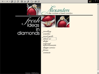

Alexanders are one of the UK's leading independent jewellers. The web site consists full product catalog and online shop. Used technologies: PHP and PostgreSQL.

Americas Card Room
Card gambling back-office system. Used technologies: ASP (JScript) and MS SQL server.
ASFA
Association Of Special Fares Agents. Used technologies: PHP and PostgreSQL.
Astra clubs are very popular gambling clubs in Eastern Europe. The web site cover all the online activities of the organization, such as jackpot statistics, news, new clubs etc. Used technologies: PHP and PostgreSQL.
AT Engineering is construction company. The web site consists of online catalog of all company projects, news, documents exchange facilities. Used technologies: PHP and PostgreSQL.